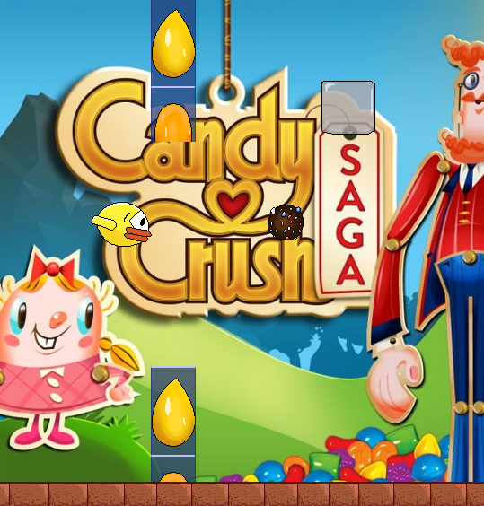

|  |
Contributor(s): Nina Volkmuth, Vrushali Samant, Shreya Ramamurthy
Date: April - May 2014 Language: Java Description: Play as Faby from the original Flappy Bird and make your way back to your home by flying through three different games in the original Flabby Bird style. Collect powerups to aid Fabby in his quest but make sure to avoid obstacles that will hinder him. My Contributions: I did programming. I also drew Faby and his animation along with the pipes, ground, powerups, and obstacles in the game. Download: Click Here |